Win10安装易信vpn步骤
1.左键 网络图标---网络和intenetr设置--vpn---添加vpn链接，预共享密钥：vpn，用户名填写易信手机号， 密码填写 易信密码， 其他请按图填写
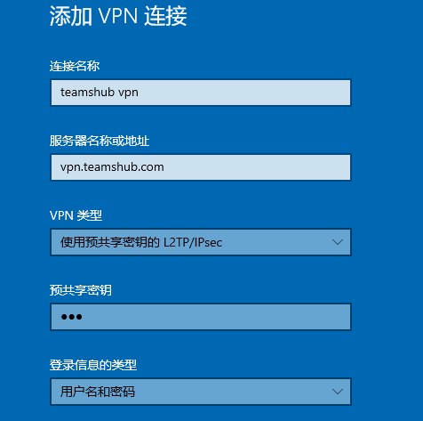 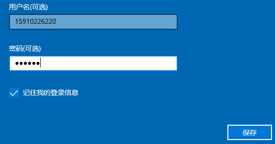2.点击页面下面的---- 更改适配器选项
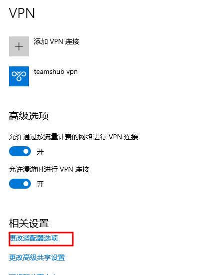3.右键 “teamshub vpn” 网络连接名--点击： 属性---常规----安全---网络
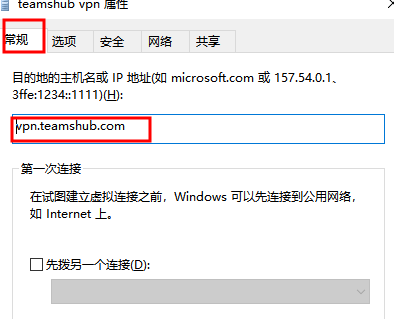3.1.属性---安全
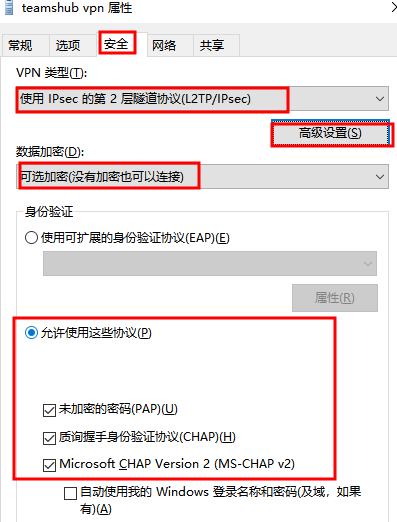3.2.属性---安全--高级设置：密钥vpn
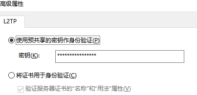3.3.属性--网络：点击 属性
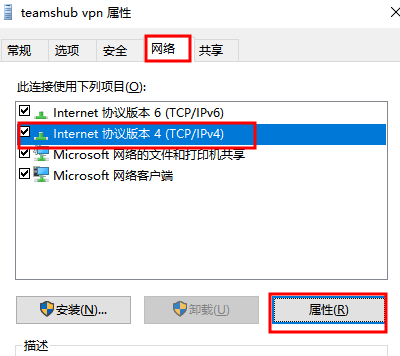
3.4. 点击 高级
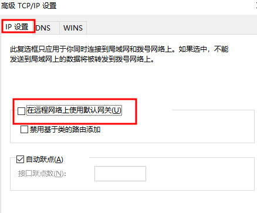4.启动
点击 左下角 网络图标----teamshub vpn----连接
5.内外同时连接
右键vpn.bat---以管理员身份运行， 按任意键继续
Windows7 L2TP VPN配置
1.初始配置：
右键单击Windows屏幕底部右侧的网络图标，点击“打开网络和共享中心”。
点击“设置新的连接或网络”。
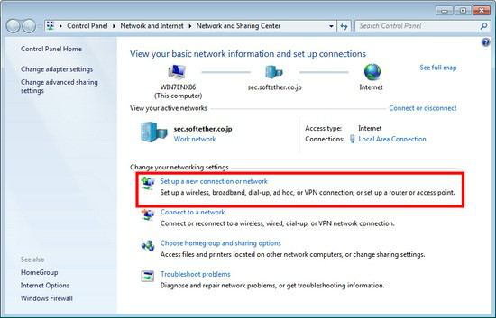选择“连接到工作场所”。
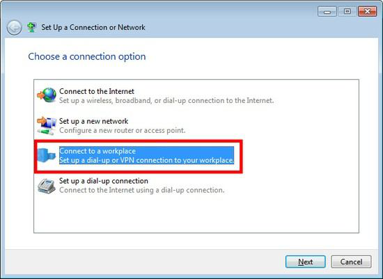选择“否，创建新连接”。
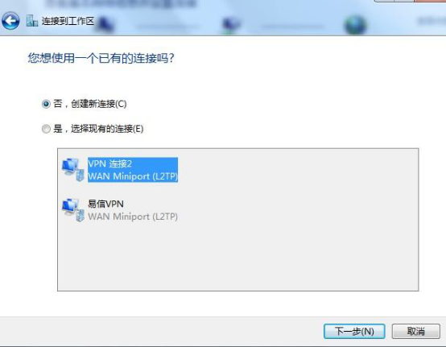 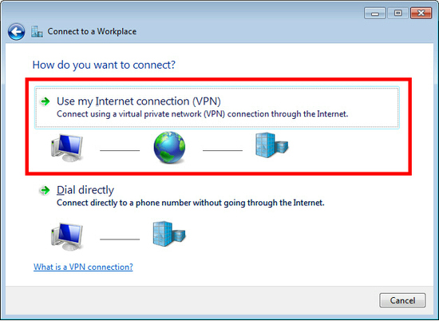你必须输入vpn服务器的IP地址或VPN主机名vpn.teamshub.com。勾选“现在不连接”
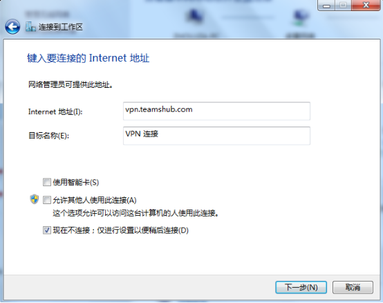输入vpn服务器的域名，勾选“现在不连接”
输入易信用户名和密码。你应该选中“记住此密码”。点击“创建”
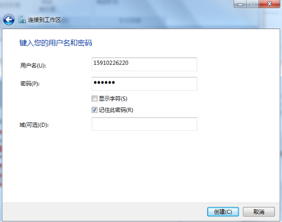点击“关闭”
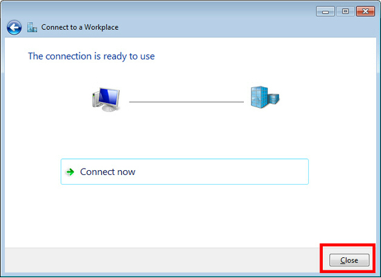进入“网络和共享中心”，单击“更改适配器设置”。
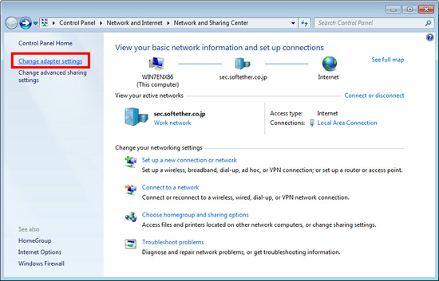右键单击上一步中创建的vpn图标，点击“属性”。
在“属性”窗口，常规选项卡中填入vpn服务器主机名vpn.teamshub.com,
切换到“安全”选项卡，（在Windows XP中，切换到“网络”选项卡）。
“VPN类型“选择“使用IPSec的2层隧道协议（L2TP/IPSec）”。
“数据加密“选择”可选加密（没有加密也可以连接）“，
点选“允许使用这些协议“，勾选”质询握手身份验证协议（CHAP）(H)“, ”Microsoft CHAP版本…………“
下一步，单击“高级设置”按钮。（在Windows XP中，单击“安全设置”的“安全”选项卡。） 输入预共享密钥的“vpn”。
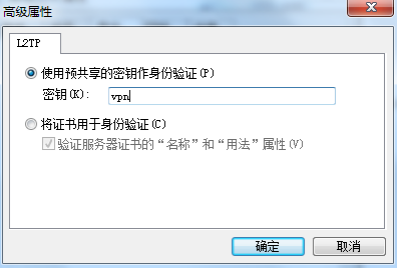选择“网络”，选择“internet协议版本4（TCP/IPV4）”，点击“属性”---“高级”，勾选“在远程网络上使用默认网关”----“确定”
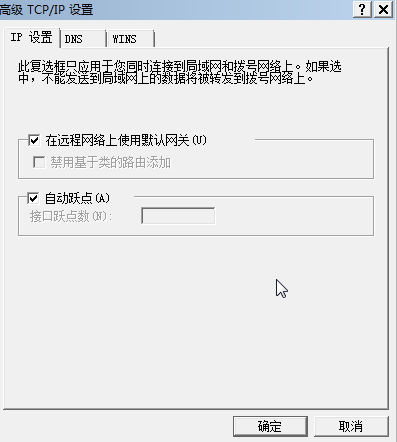以上配置完成后，单击“确定”。
右键易信vpn连接名---属性---网络---internet协议版本4---属性---高级---ip设置---取消 ”在远程网络使用默认网关” , 启动易信vpn后, 右键----以管理员身份运行 vpn.bat文件, 按任意键继续即可
WINXP使用L2TP VPN配置
第1步：右击【网上邻居】，然后单击【属性】
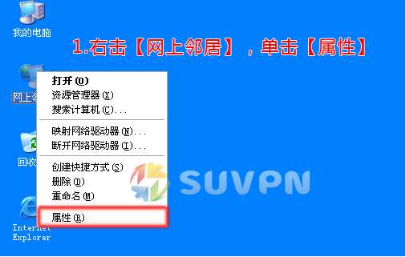第2步：单击【创建一个新的连接】
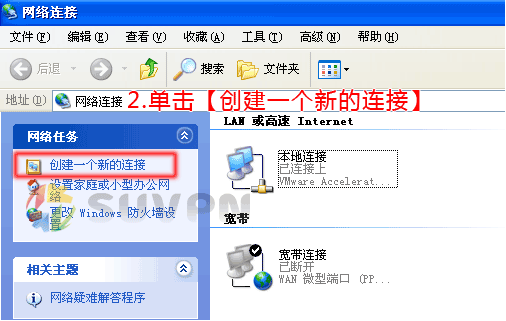第3步：单击【下一步】
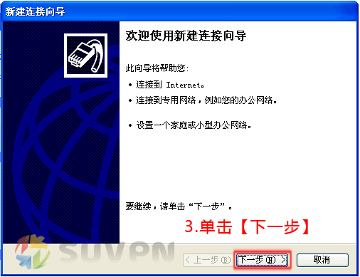第4步：选择【连接到我的工作场所的网络】，然后单击【下一步】
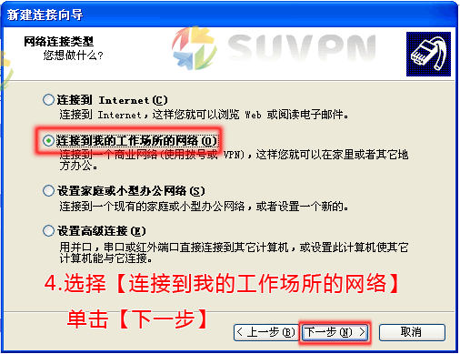第5步：选择【虚拟专用网络连接】，然后单击【下一步】
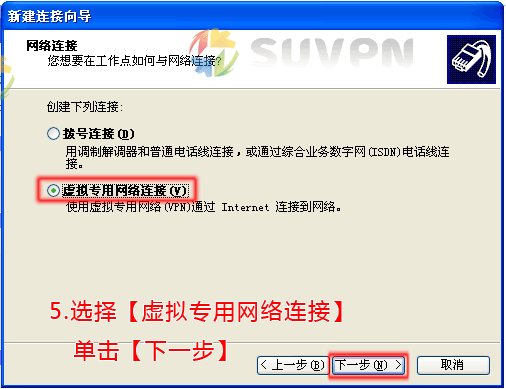第6步：输入公司名，如：suvpn 可以自定义，然后单击【下一步】
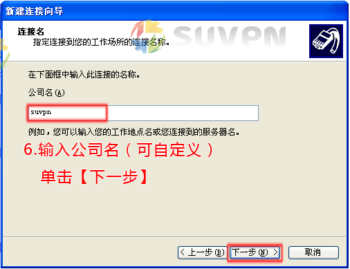第7步：如果出现此步骤，选择【不拨初始连接】，单击【下一步】，如无此步骤，请略过！
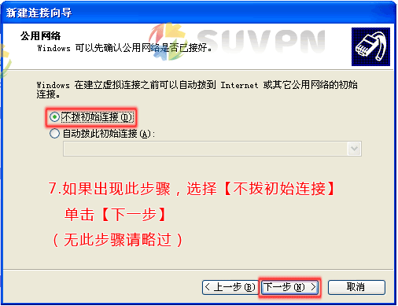第8步：设置【主机名或IP地址（服务器列表请点击这里查看）】，单击【下一步】
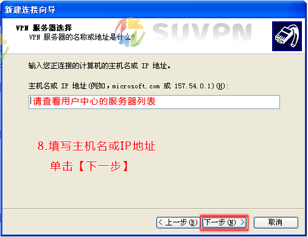第9步：勾选【在我的桌面上添加一个到此连接的快捷方式】，方便下次连接，然后单击【完成】
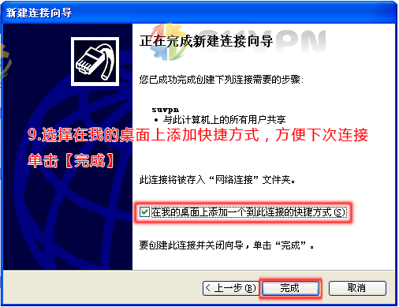第10步：单击【属性】
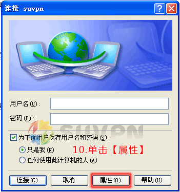第11步：选择【网络】标签，VPN类型选择【L2TP IPSec VPN】
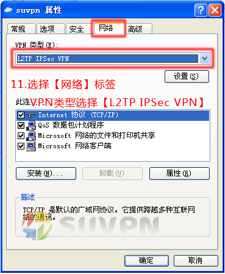第12步：选择【安全】标签，点击【IPSec设置...】，在弹出的IPSec设置窗口中勾选使用预共享的密钥作身份验证【密钥：vpn】，然后单击【确定】
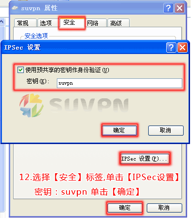第13步：设置【用户名（您在VPN上注册的用户名）】、【密码（您在VPN上注册的密码）】，勾选【为下面用户保存用户名或密码】方便下次连接，然后单击【连接】即可连接VPN网络。
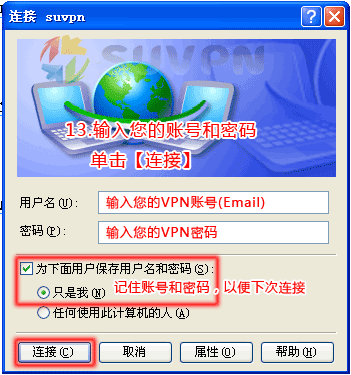如通过以上设置，在连接VPN时仍出现如下错误提示界面：
请务必考虑拨入计算机是否已启用IPSEC Services服务。
注：要成功建立L2TP IPSEC VPN，在以上配置基础上还需将拨入计算机的IPSEC Services服务启用才行。
具体需将开始》控制面板》管理工具》服务》IPSEC Services 协议的启动类型修改成手动，然后启用即可，具体界面如下：
一定把ipsec服务开启，否则不成功